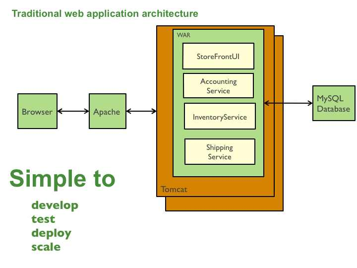
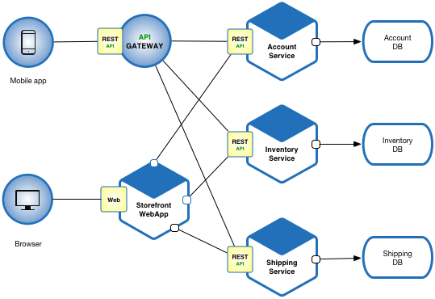

微服务的模式语言-0-核心及细节索引(Pattern language)
# 这是在讲啥？
模式语言提供了讨论问题的交流术语，它明确了特定场景、特定问题的解决方案和延伸性思考。
模式语言主要目的是帮助开发者解决在设计和编程中遇到的共同的问题，即清晰的问题陈述、体现问题的解决方案以及推动解决方案的力量（Force）的清晰表述。
# 话不多说，开搞👇
# 核心模式(Application architecture patterns)
# 为应用程序选择哪种架构？
# 背景
在开发服务端企业应用时，应用需要：
- 支持各种不同类型的客户端，比如桌面浏览器、移动浏览器以及原生移动应用
- 向第三方提供可访问的API，并通过Web Service或者消息代理与其它应用实现集成。应用通过执行业务逻辑、访问数据库、与其它系统交换信息、并返回一条HTML/JSON/XML响应，来处理请求（HTTP请求与消息）。
# 通用的总体架构
- 展现组件(Controller层)：负责处理HTTP请求并响应HTML或者JSON/XML（对于web Services APIs）
- 业务逻辑(Service层)：应用的业务逻辑
- 数据库访问逻辑(Dao层)：用于访问数据库的数据访问对象
- 应用集成逻辑——消息层，例如基于Spring Integration
不同逻辑组件分别响应应用中的不同功能模块。
系统层次：Controller>Service>Dao
# 什么叫一个好的架构
- 应用需要由一个开发者团队专门负责
- 团队新成员需要快速上手
- 应用应该易于理解和修改
- 对应用能够进行持续部署
- 需要在多台设备上运行应用副本，从而满足可扩展性与可用性的要求
- 使用各种新技术（框架、编程语言等）
# 本节所使用的实例
一款电子商务应用程序，使其能够接收来自客户的订单、验证库存信息与可用信用额度，而后进行发货。该应用程序会包含多个组件，其中StoreFrontUI负责实现用户界面，而其它后端服务则分别负责检查信用额度、维护库存信息以及发送订单。
# 单体架构(Monolithic architecture)
# 结构和部署方式
采用单一部署单元的方式架构应用，例如：
- 单个Java WAR文件，运行在 Tomcat 之类的 Web 容器上
- 单个Rails或者NodeJS代码目录层级，该目录层级的部署通过在 Apache/Nginx 上使用 Phusion Passenger，或者在 Tomcat 上使用 JRuby 得以实现
- 对于要水平扩展性能的情况，只需要在负载均衡器之后运行此应用的多个实例即可
例如，在本节示例中，用单个Java WAR文件打包的应用程序如图：

# 优点
- 易于开发：当前开发工具与IDE的设计目标即在于支持单体应用的开发。
- 易于部署：你只需要将该WAR（或者目录层级）部署在合适的运行环境中即可。
- 易于扩展：你可以在负载均衡器后面运行多个应用副本实现扩展。
# 缺点
一旦应用变大、团队扩大，这种方案的弊端将会变得愈发明显：
- 应用扩大时会自然而然地拉低代码质量：特别是对那些团队新成员来说
- 单体应用巨大的代码库难以被理解和进行修改，进而导致开发速度减慢。
- 难以正确把握代码变化，导致代码质量逐步下滑，陷入恶性循环。
- 由于没有清晰的模块边界，模块化会逐渐消失。
- 难于进行规模化开发：
- 当应用达到特定规模，需要将现有组织拆分成多个团队，每个团队负责不同的功能模块。举例来说，我们可能需要设立UI团队、会计团队、库存团队等等。但因为模块化的逐渐消失，团队将无法独立展开工作。团队需要在工作进度和重新部署上进行协调，这是在为变更和更新产品徒增困难。
- 应用扩展困难：单体架构只能进行一维伸缩
- 数据量增大会使得该架构无法伸缩。每个应用实例需要访问所有数据，导致缓存低效，加大内存占用和I/O流量。
- 不同的应用组件有不同的资源需求——有的是CPU密集型的，另外一些是内存密集型的。单体架构无法单独伸缩每个组件。
- 影响开发部署的效率：
- 代码库越大，IDE速度越慢，开发者的生产效率越低。
- 应用越大，Web容器启动时间越长，开发者的部署效率越低。
- 持续部署困难：
- 过长的启动时间本身就是频繁部署的一大障碍。
- 为了更新一个组件，你必须重新部署整个应用。这会中断那些可能与更改无关的后台任务（例如Java应用中的Quartz任务），同时可能引发问题。
- 未被更新的组件有可能无法正常启动。重新部署会增加风险，进而阻碍频繁更新（这对用户界面开发者而言尤其是个难题，因为用户界面开发者经常需要进行快速迭代与频繁重新部署）。
- 需要长期关注同一套技术栈：
- 单体架构迫使我们长期使用在开发初期选定的技术堆栈（在某些情况下，可能是某些技术的特定版本），是渐进采用新技术的障碍。举例来说，如果我们选择了JVM，那么我们可以选择Java以外的一些语言，因为Groovy和Scala等基于JVM的语言也可以和Java进行良好的互操作。但此时以非JVM语言编写的组件就无法在该单体架构中使用。
- 如果所使用的应用平台框架已经过时，那么我们将很难将应用迁移到其它更新并且更完善的框架当中。有时候为了采用一套新型平台框架，我们甚至需要重写整个应用，这是风险很大的工作。
# 已知案例
大部分互联网公司在开发初期都是单体架构
# 微服务架构(Microservices architecture)
采用一组松耦合服务的方式架构应用
# 结构和部署方式
- 用 Scale Cube 方法（特别是Y轴扩展）设计应用架构，将应用程序按功能拆分为一组互相协作的服务。每个服务实现一组特定、相关的功能。举例来说，示例应用程序可以由订单管理服务、客户管理服务等多个服务构成。
- 服务间的通信则可由HTTP/REST等同步协议或者AMQP等异步协议实现。服务可以彼此独立开发与部署。每个服务皆有自己的数据库，从而保证其与其它服务解耦。在必要时，可利用数据库复制机制或者应用层事件驱动机制，维护数据库之间的数据一致性。
例如，在本节示例中，用微服务模式构建的应用程序如图：

# 优点
- 每项微服务相对较小
- 易于开发者理解
- IDE处理速度更快，可提高开发者生产效率
- Web容器启动速度更快，提高开发者生产效率并可加快部署速度
- 每项服务皆可独立于其它服务进行部署：简化频繁部署新服务版本的流程
- 易于实现规模化开发：多团队可以共同进行开发工作。每个（双披萨，即团队成员规模控制在订购两块披萨即可吃饱的程度）团队负责其中一项服务。各团队可独立于其他团队，进行开发、部署工作及扩展自身服务。
- 改善故障隔离：举例来说，如果某一服务出现内存外溢，则只有该服务本身受到影响。其它服务将继续正常处理请求。相比之下，单体架构中的故障组件会令整套系统陷入瘫痪。
- 每项服务可独立进行开发与部署
- 无需长期使用同一套技术堆栈
# 缺点
- 开发者必须应对创建分布式系统所产生的额外的复杂因素：
- 现有开发者工具/IDE主要面向单体应用程序，因此无法显式支持分布式应用的开发。
- 测试工作更加困难。
- 开发者必须采取服务间通信机制。
- 很难在不使用分布式事务机制的情况下跨服务实现功能。
- 跨服务实现功能要求各团队进行密切协作。
- 部署复杂。在生产环境下，对这类多种服务类型构建而成的系统进行部署与管理十分困难。
- 内存占用量更高。微服务架构使用N*M个服务实例替代N个单体应用实例，如果每项服务运行自己的JVM（或者其它类似机制），且各实例之间需要进行隔离，那将导致M倍JVM运行时的额外开销。另外，如果每项服务都在自己的虚拟机（例如 EC2 实例）上运行，如同Netflix一样，那么额外开销会更高。
# 何时使用？
- 应用微服务方案带来的挑战在于如何把握好时机：
- 在开发应用程序的最初版本时，大家往往不会面临需要使用微服务架构才能解决的问题。
- 使用复杂的分布式架构会拖慢开发流程。
- 对于初创企业，其面临的最大挑战往往在于如何快速发展商业模式及附属应用。微服务架构中的Y轴拆分方式可能使应用更加难以迅速迭代。
- 但当面临需要解决扩展性问题的时候再去进行功能拆分，单体应用的复杂依赖性使其很难被分解为服务集合。
# 已知案例
众多大型网站将单体架构发展为微服务架构，其中包括 Netflix、Amazon 与 eBay 等。
# Netflix
作为一个热门视频流服务，Netflix 利用一套大规模的面向服务的架构来承载高于 30% 的互联网流量。该公司每天需要处理来自 800 多种设备的 10 亿多次视频流 API 请求。平均每次 API 调用会在后端服务中产生 6 次后续调用。
# Amazon
Amazon.com 最初采用一套双层架构。为了扩展业务规模，其决定迁移至一套由数百项后端服务构成的面向服务的架构。多个应用调用这些服务，其中包括 Amazon.com网站和Web服务API。Amazon.com 网站需要调用 100 到 150 个服务方可获取到构建一个 Web 页面所需的全部数据。
# eBay
作为拍卖网站，eBay.com 也是从单体架构逐步转向面向服务的架构。其应用层由多个独立应用构成。每个应用负责实现完成一组特定功能的业务逻辑，例如购买或者出售。每个应用皆利用X轴进行拆分，部分应用（例如搜索）以Z轴进行拆分。eBay.com 还在数据库层采用了 X、Y 与 Z 轴相结合的扩展方式。
# 微服务架构中要解决的问题
这些问题都将在下面几节得到解答
# 服务拆分(Decomposition)
如何把应用拆分为若干个服务？
如何界定服务的范围？
- 根据业务能力拆分（Decompose by business capability）：根据业务能力界定服务的范围
- 根据领域的子域拆分（Decompose by subdomain）：根据领域驱动设计中子域的概念界定服务的范围
# 部署模式（Deployment patterns）
如何部署应用程序的服务？
单主机上部署服务的多个实例（Multiple service instances per host）：把服务的多个实例部署在一台主机上
单主机上部署服务的单个实例（Single service instance per host）：把服务的单一实例部署在它独享的主机上
服务实例与虚拟机一一对应（Service instance per VM）：把服务的单一实例部署在它独享的虚拟机上
服务实例与容器一一对应（Service instance per Container）：把服务打包为容器镜像，从而将单一实例部署在它独享的容器上
无服务器部署（Serverless deployment）：使用无服务器部署平台部署服务实例
服务部署平台（Service deployment platform）：使用提供服务抽象能力的高度自动化部署平台部署服务实例
# 需要关注的边界问题（Cross cutting concerns）
如何处理服务实例与外界交互的问题？
微服务的基底（Microservice chassis）：一个用于服务实例与外界交互和简化服务开发的框架
配置信息外部化（Externalized configuration）：把类似数据库连接、访问密钥等配置信息外部化
# 通讯模式（Communication patterns）
应该选择怎样的通信机制来进行服务间通讯和外部客户端通讯？(风格)
- 远程过程调用（Remote Procedure Invocation）：使用基于 RPI 协议的服务间通讯方式
- 消息（Messaging）：使用异步消息进行服务间通讯
- 领域独用协议（Domain-specific protocol）：使用特定领域的通讯协议（如 SIP，等）
如何处理外部客户端与服务之间的通讯？(外部 API)
- API 网关（API gateway）：为每一类客户端提供一个访问服务的独特接口
- 服务前端的后端（Backend for front-end）：为每一类客户端都提供一个独立的 API 网关
# 服务发现
一个基于 RPI 的客户端如何在网络上发现服务实例的位置？
- 客户端服务发现（Client-side discovery）：客户端通过直接查询服务注册表获取服务实例的位置
- 服务器端服务发现（Server-side discovery）：路由模块通过查询服务注册表获取服务实例的位置
- 服务注册表（Service registry）：一个记录了服务实例位置的数据
- 自注册（Self registration）：服务实例自己完成向服务注册表的注册
- 第三方注册（3rd party registration）：通过第三方模块来进行服务实例信息到服务注册表的注册过程
# 可靠性
如何避免由于服务故障或网络中断所引起的故障蔓延到其他服务？
- 断路器（Circuit Breaker）：当远端服务返回的故障率超过一定的阀值时，客户端代理（比如 API 网关）对远程服务的调用将立刻返回失败的信息
# 数据管理（Data management）
如何实现数据一致性和查询？
- 每服务数据库（Database per Service）：每个服务都拥有它私有的数据库
- 共享数据库（Shared database）：服务之间共享同一个数据库
- 事件驱动架构（Event-driven architecture）：使用事件来维护服务间的数据一致性
- 事件溯源（Event sourcing）：以一连串事件的方式来持久化聚合
- 事务日志跟踪（Transaction log tailing）：跟踪数据库的日志变更并由此对外发布消息
- 数据库触发器（Database triggers）：使用触发器来捕获对数据的修改
- 应用程序事件（Application events）：应用程序从消息队列获取事件并插入数据库中
- 命令查询职责分离（CQRS）：维护一个或者多个重要的数据视图以供高效率的查询
# 安全（Security）
如何向服务实例传递访问客户端的身份信息？
- 访问令牌（Access Token）：服务实例通过访问令牌来安全地传递客户端的身份信息
# 测试（Testing）
如何更便捷的测试？
- 服务组件测试（Service Component Test）： test suite that tests a service in isolation using test doubles for any services that it invokes
- 服务集成协议测试（Service Integration Contract Test）：a test suite for a service that is written by the developers of another service that consumes it
# 可观测性（Observability）
如何掌握一个运行中微服务应用的行为并进行有效的故障排错？
- 应用日志（Log aggregation）：聚合应用程序产生的日志文件
- 应用指标（Application metrics）：在代码中实现收集应用运营过程中各类指标的功能
- 审计日志（Audit logging）：把用户行为记录在数据库中供日后核查
- 分布式追踪（Distributed tracing）：在服务代码中针对每一个外部访问，都分配一个唯一的标识符，并在跨服务访问时传递这个标识符以供追踪分布式引发的问题。例如，当通过一个集中式服务处理外部请求时，记录请求本身的信息以及请求的开始和结束时间。
- 异常追踪（Exception tracking）：把所有服务程序代码触发的异常信息都汇聚到集中的异常追踪服务，并根据一定的逻辑对开发者或运维人员发出通知。
- 健康检查 API（Health check API）：一个监控服务可调用的 API，通常返回服务健康度信息，或对 ping 等心跳检查请求做出响应。
# UI 模式（UI patterns）
如何将源自多个服务的信息组织在一起生成 UI 界面或 Web 页面？
- 服务器端页面碎片化元素构建（Server-side page fragment composition）：在服务器端通过编排由多个业务或领域相关后端服务生成的 HTML 片段来构建前端输出的页面内容
- 客户端 UI 构建（Client-side UI composition）：在客户端通过编排由多个业务或领域相关 UI 组件生成的 HTML 片段来构建前端输出的页面内容